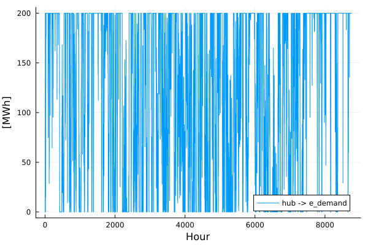

Gereralized Assets and Flows
Tulipa uses Assets and Flows as generalized components to build energy systems.
Explore the files
Take a look at the files in the my-awesome-energy-system/tutorial-2 folder.
Do you notice any changes compared to the files you worked with in tutorial 1?
Run the workflow
In my_workflow.jl you can simply change the name of your input directory and run your code.
From the Basics Tutorial, it should look something like this:
Remember to activate the environment in the current directory using the following code in your Julia REPL:
using Pkg: Pkg
Pkg.activate(".")# Load the packages
import TulipaIO as TIO
import TulipaEnergyModel as TEM
using DuckDB
using DataFrames
using Plots
# Define the directories - notice we now select tutorial 2 for both the input and output directory
input_dir = joinpath(@__DIR__, "my-awesome-energy-system/tutorial-2")
# Create the connection and read the input files
connection = DBInterface.connect(DuckDB.DB)
TIO.read_csv_folder(connection, input_dir)
# Add the defaults
TEM.populate_with_defaults!(connection)
# Run the model
energy_problem =
TEM.run_scenario(connection);EnergyProblem:
- Model created!
- Number of variables: 96360
- Number of constraints for variable bounds: 87600
- Number of structural constraints: 122640
- Model solved!
- Termination status: OPTIMAL
- Objective value: 1.4854146333461672e8
- Objective breakdown:
- assets_fixed_cost_aggregated_vintage_method: 0.0
- assets_fixed_cost_compact_vintage_method: 0.0
- assets_investment_cost: 0.0
- flows_fixed_cost: 0.0
- flows_investment_cost: 0.0
- flows_operational_cost: 1.4854146333461672e8
- storage_assets_energy_fixed_cost: 0.0
- storage_assets_energy_investment_cost: 0.0
- units_on_operational_cost: 0.0
- vintage_flows_operational_cost: 0.0
Remember that you can always define and create the output directory if it doesn't exist to export the results to csv files. Then you can use the output_folder keyword argument in the run_scenario function to save the results in that folder.
Explore the results
Explore the flow that goes from the hub to the e_demand:
flows = TIO.get_table(connection, "var_flow")
from_asset = "hub"
to_asset = "e_demand"
year = 2030
rep_period = 1
filtered_flow = filter(
row ->
row.from_asset == from_asset &&
row.to_asset == to_asset &&
row.milestone_year == year &&
row.rep_period == rep_period,
flows,
)
plot(
filtered_flow.time_block_start,
filtered_flow.solution;
label=string(from_asset, " -> ", to_asset),
xlabel="Hour",
ylabel="[MWh]",
)
Explore the congestion using the duals in the results and displaying the first 5 rows of the table:
transport = TIO.get_table(connection, "cons_transport_flow_limit_aggregated_vintage_method")
names(transport)
first(
filter(
row ->
row.dual_max_transport_flow_limit_aggregated_vintage_method != 0.0,
transport,
),
5,
)| Row | id | from_asset | to_asset | milestone_year | rep_period | time_block_start | time_block_end | var_flow_id | dual_max_transport_flow_limit_aggregated_vintage_method | dual_min_transport_flow_limit_aggregated_vintage_method |
|---|---|---|---|---|---|---|---|---|---|---|
| Int64 | String | String | Int32 | Int32 | Int32 | Int32 | Int64 | Float64 | Float64 | |
| 1 | 25 | hub | e_demand | 2030 | 1 | 25 | 25 | 87625 | -45.0 | 0.0 |
| 2 | 26 | hub | e_demand | 2030 | 1 | 26 | 26 | 87626 | -45.0 | 0.0 |
| 3 | 27 | hub | e_demand | 2030 | 1 | 27 | 27 | 87627 | -45.0 | 0.0 |
| 4 | 29 | hub | e_demand | 2030 | 1 | 29 | 29 | 87629 | -45.0 | 0.0 |
| 5 | 30 | hub | e_demand | 2030 | 1 | 30 | 30 | 87630 | -45.0 | 0.0 |
Can you explain the values you get from the column dual_max_transport_flow_limit_aggregated_vintage_method? Hint: consider what is currently defining the capacity to transport the flow between the assets you see in the table.
Challenge: Add a Battery
Try adding a battery (a short-term storage asset) that can only charge from the solar PV and discharges to the e_demand consumer.